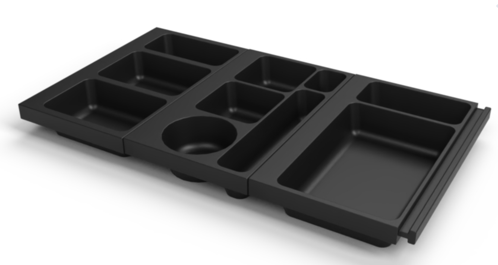
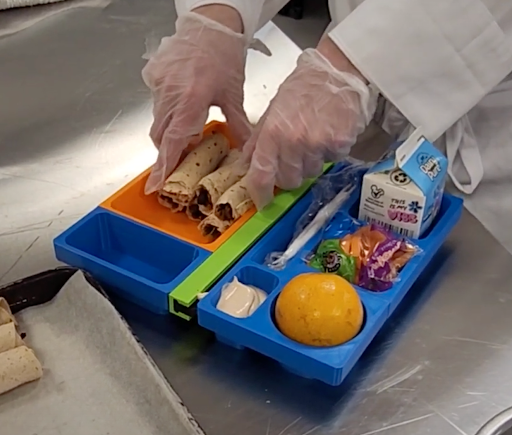
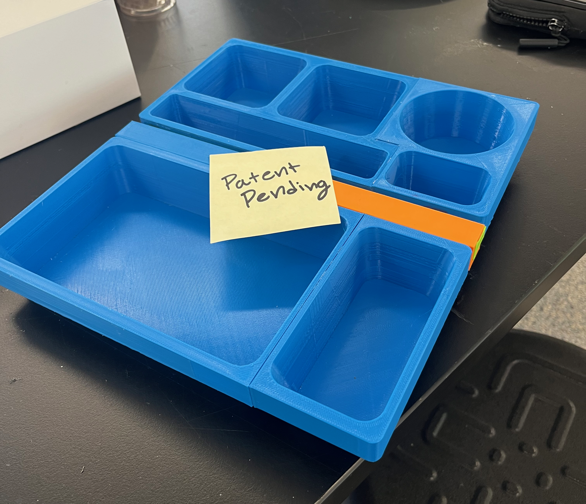
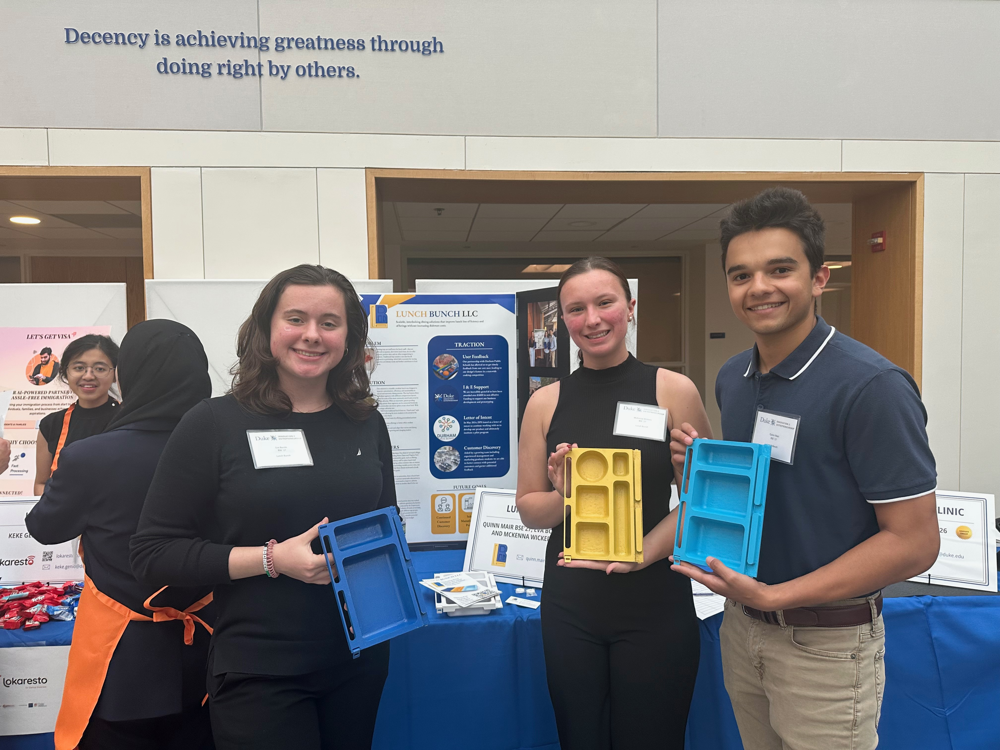

Duke Innovation & Entrepreneurship · Durham Public Schools
Lunch Bunch LLC
Collaborating with Durham Public Schools (DPS) and Duke, my first-year design team designed an alternative lunch tray to increase cafeteria effiency. After recieving positive feedback from DPS and prospective users, we explored commercializing.

Project Summary
As part of Duke's Engineering 101 course, my team partnered with Durham Public Schools (DPS) to address challenges related
to cafeteria efficiency and menu flexibility. DPS sought a solution that would expand food options for students while
minimizing increases in operational costs. Over the course of a semester, we designed and
iterated on a modular lunch tray system that would enable cafeterias to transition from a traditional serving line to a
food court-style model with multiple stations, even for younger students.
Following our final presentation, DPS staff expressed strong interest in the concept and encouraged us to explore
commercialization opportunities. Throughout 2024, we worked with materials scientists, manufacturing and process
engineers, intellectual property specialists, potential customers, and other stakeholders to further refine both
the product and business model. In December 2024, we filed a non-provisional design patent and secured our first
source of non-dilutive funding to support continued development.
In spring 2025, we presented the project at the annual Duke Startup Showcase, where we received positive
feedback and interest from nearby schools and other prospective customers. As the project progressed, however,
shifting priorities and funding constraints within DPS reduced the viability of commercializing. After meeting with DPS,
we transitioned our focus toward licensing opportunities and exploring alternative routes for bringing the
product to market.
Project Timeline
December 2023
Presented to DPS
At the end of our first-year design course, we presented our solution to Durham Public Schools (DPS) who encouraged our team to explore commercializing.
Spring 2024
Exploring Market Fit
Working with DPS, we tested our product and surveyed potential users to improve our design.
August 2024
First Grant Funding, Joined On-Campus Accelerator
Joined an on-campus early stage startup accelerator through Duke Innovation and Entrepreneurship, awarded CFCI GoBig grant.
September 2024
DPS Letter of Intent
With an improved design, DPS issues a written letter of intent to purchase 40,000 trays if they could be produced at a reasonable price.
December 2024
Patent Application Submitted
Working with campus resources and local attorneys, we filed a nonprovisional design patent at the end of the fall semester.
April 2025
Featured in Duke Startup Showcase
Featured in the annual Duke Startup Showcase, hosted by Duke Innovation and Entrepreneurship
Summer 2025
DPS Priorities Shift
As funding priorities and opportunities changed, DPS encouraged us to explore licensing instead of commercializing
Photo Gallery


